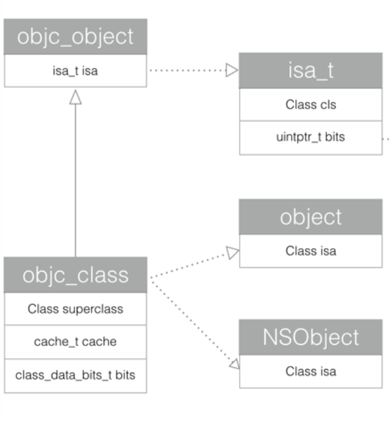
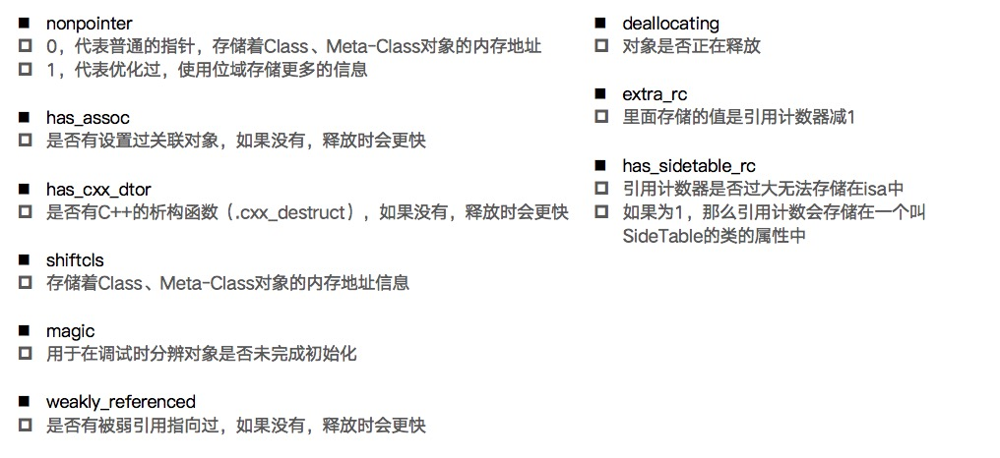
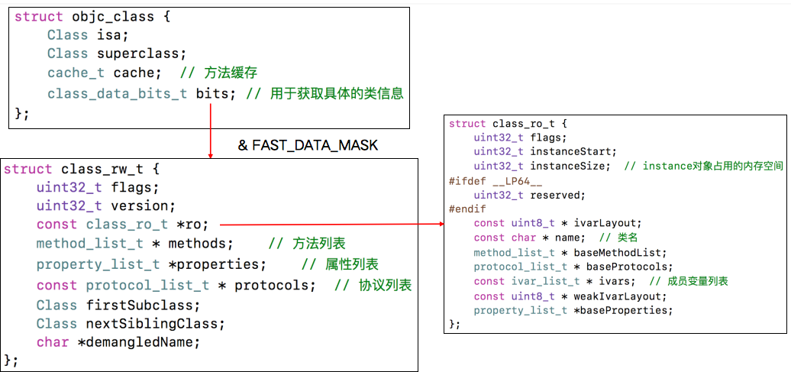
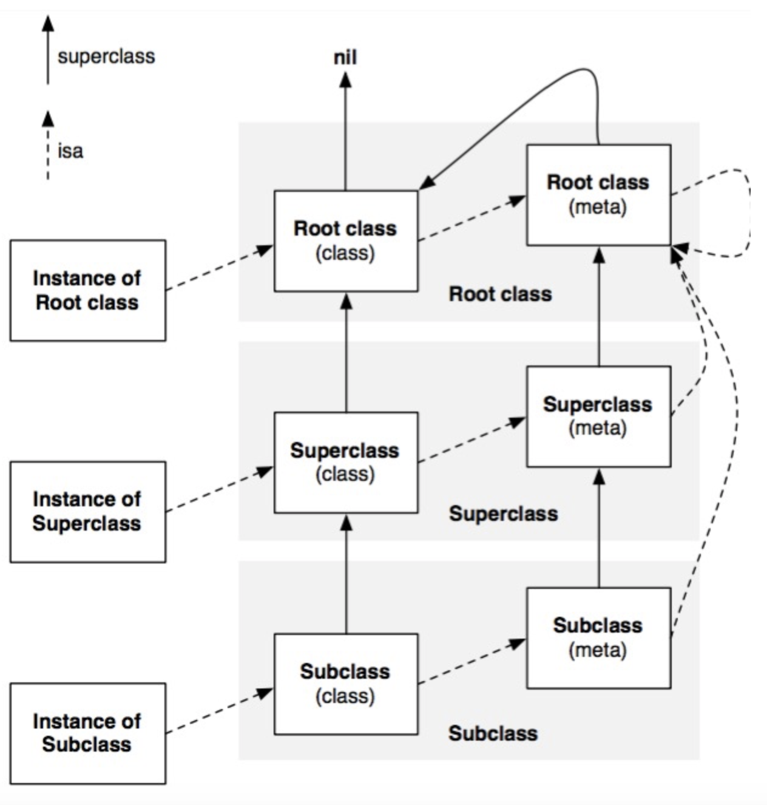

runtime不只是一些C语言的API，更包括了一套完整的面向对象的数据结构。研究runtime，首先需要研究对象模型。
对象的本质
NSObject的底层实现
OC转c/c++
为了探索本质,我们需要将oc的代码转化为对应的c代码。 待转化的oc代码，如下所示：
#import <Foundation/Foundation.h>
@interface ZHAnimal : NSObject
@property (nonatomic, assign) NSInteger age;
@end
@implementation ZHAnimal
@end
@interface ZHCat : ZHAnimal
@property (nonatomic, assign) NSInteger legs;
@end
@implementation ZHCat
@end
int main(int argc, char * argv[]) {
@autoreleasepool {
}
}
准备的事例代码使用了oc的类、属性及继承特性，以便我们探索这些特性的底层实现。
之后，我们使用如下命令进行转换。
xcrun -sdk iphoneos clang -arch arm64 -rewrite-objc main.m -o mainarm64.cpp
这个命令的意思是使用Clang编译器将main.m文件重写输出为mainarm64.cpp文件，指定的架构参数是arm64。
在mainarm64.cpp文件中，我们首先搜索"ZHCat_IMPL {",可以找到如下代码：
struct ZHCat_IMPL {
struct ZHAnimal_IMPL ZHAnimal_IVARS;
NSInteger _legs;
};
除了自身的成员变量_legs,还能看到 ZHAnimal_IMPL 结构体类型的 ZHAnimal_IVARS 的结构体变量。
同理，我们搜索"ZHAnimal_IMPL {",可以找到如下代码：
struct ZHAnimal_IMPL {
struct NSObject_IMPL NSObject_IVARS;
NSInteger _age;
};
这段代码逻辑和上面的一样。那么接着看NSObject。可以找到如下代码：
struct objc_selector; struct objc_class;
typedef struct objc_class *Class;
struct NSObject_IMPL {
Class isa;
};
到此为止，简单小结一下：
- NSObject的实现是struct,里面包含一个objc_class类型的结构体指针,名为isa.
- 存在继承关系的对象之间，子类的结构体中会包含父类的结构体成分，且父类的成分在前。
现在，所有的谜题都指向objc_class，我们当然想知道objc_class里都有些什么，但是在mainarm64.cpp中只有声明。下一节，我们将继续探索。
探寻objc_class
在objc4源码可以下载到开源代码，注意下载序号大的新版本。
在objc-runtime-new文件中，我们终于看到了objc_class的实现。代码如下:
struct objc_class : objc_object {
// Class ISA;
Class superclass;
cache_t cache; // formerly cache pointer and vtable
class_data_bits_t bits; // class_rw_t * plus custom rr/alloc flags
class_rw_t *data() {
return bits.data();
}
...
}
struct objc_object {
private:
isa_t isa;
public:
// ISA() assumes this is NOT a tagged pointer object
Class ISA();
// getIsa() allows this to be a tagged pointer object
Class getIsa();
}
typedef struct objc_object *id;
通过这段源码，我们可以看到，追踪到最后的数据结构是objc_object，里面有一个isa_t类型的isa成员。
- oc中所有的对象都会包含一个isa_t类型的成员变量。objc_class类也是一个对象，通过继承于objc_object拿到了的isa_t结构类型的isa成员。
- 对象或者说实例对象，只有isa，用来找到对应的类对象。类对象才有superclass(父类指针)、cache(方法缓存)和bits(类数据信息)。（bits里包含了ivars成员变量列表、methods方法列表、protocals协议列表和properties属性列表等类信息）

Class(objc_class)中的数据结构
isa_t
isa数据结构的定义，摘录于objc4-750.1
union isa_t {
isa_t() { }
isa_t(uintptr_t value) : bits(value) { }
Class cls;
uintptr_t bits;
#if defined(ISA_BITFIELD)
struct {
ISA_BITFIELD; // defined in isa.h
};
#endif
};
# define ISA_BITFIELD \
uintptr_t nonpointer : 1; \
uintptr_t has_assoc : 1; \
uintptr_t has_cxx_dtor : 1; \
uintptr_t shiftcls : 44; /*MACH_VM_MAX_ADDRESS 0x7fffffe00000*/ \
uintptr_t magic : 6; \
uintptr_t weakly_referenced : 1; \
uintptr_t deallocating : 1; \
uintptr_t has_sidetable_rc : 1; \
uintptr_t extra_rc : 8
在arm64架构之前，isa就是一个普通的指针，存储着Class、Meta-Class对象地址
从arm64架构开始，isa成了一个union结构的共同体，并使用位域来存储更多的信息。
其含义如图所示:可以看到大多与内存管理相关

class_data_bits_t

class_ro_t存储着类的原始信息，在运行时根据class_ro_t生成class_rw_t，并通过ro指针指回了class_ro_t.
以方法列表为例，假如Animal类有run方法，同时通过分类扩展了eat方法。那么，run方法首先位于class_ro_t中的baseMethodList中，在运行时，会加载所有分类，把分类中的方法和baseMethodList合并成methods，且分类中的方法在前。
class_rw_t中没有定义ivars的字段，在访问成员变量时，直接通过isa_t找到对应的objc_class,并通过class_ro_t的ivarlist做地址偏移，查找对应的对象内存。因此，内存布局在编译时就已经确定，runtime不能动态修改ivars，会破坏已有的内存布局。只能通过类似关联对象的方式重新开辟一开专门的内存空间。
method_t
method_list_t数组中存储着method_t，method_t是对方法的封装。
struct method_t {
SEL name;//方法名
const char *types;//编码，内含返回值类型、参数类型等信息
IMP imp; //本质为函数指针，存储函数实现的地址
};
cache_t
方法调用是在methods中通过receiver和SEL查找定位IMP的过程。如果一个方法被多次调用，通过缓存技术就能提高效率。
cache_t就是这样一个缓存，他通过散列表来缓存曾经调用过的方法，用以提高方法的查找速度。
struct cache_t {
struct bucket_t *_buckets;//散列表
mask_t _mask;//散列表的长度 - 1
mask_t _occupied;//已经缓存的方法数量
}
struct bucket_t {
IMP _imp;
cache_key_t _key;//SEL为key
}
// Class points to cache. SEL is key. Cache buckets store SEL+IMP.
// Caches are never built in the dyld shared cache.
static inline mask_t cache_hash(cache_key_t key, mask_t mask)
{
return (mask_t)(key & mask);
}
//objc-cache.mm
通过源码可以看到散列表的实现机制是：将SEL和长度进行&操作(类似取余)，得到的结果作为_buckets的下标。存取_buckets都可以通过下标直接查找。这种机制是非依次存放的，是一种空间换时间的思路。而当空间不够存放时，会进行扩容。此时因为key已经改变，会清空已缓存的数据，重新建索引。
对象间isa及superclass关系
